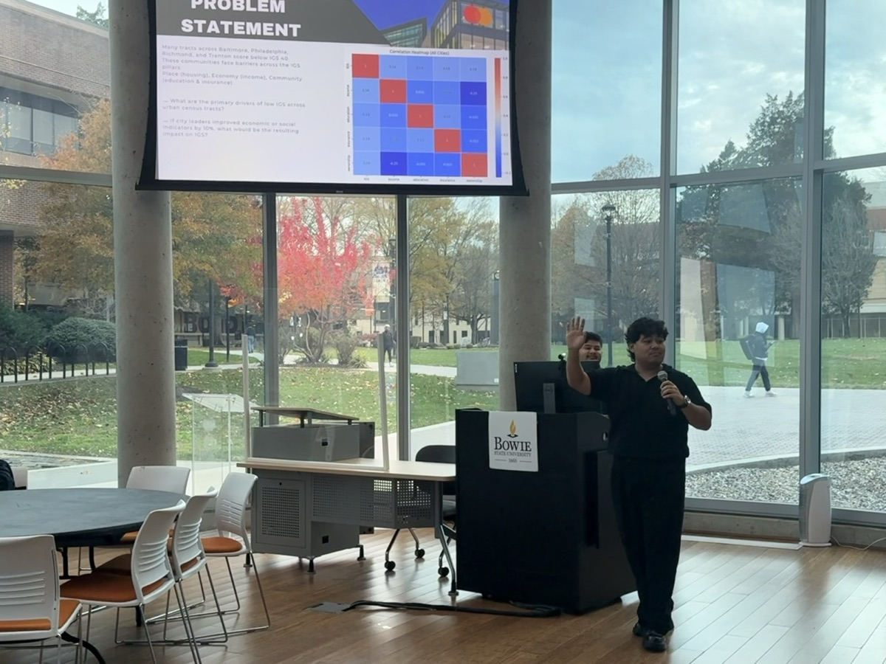
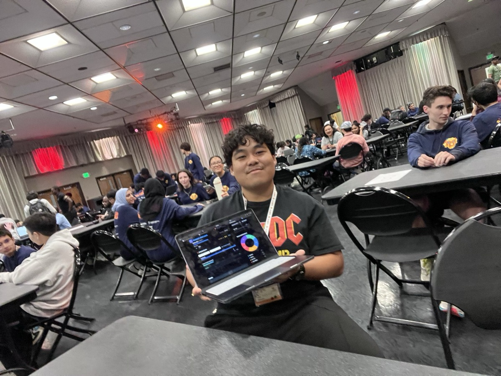
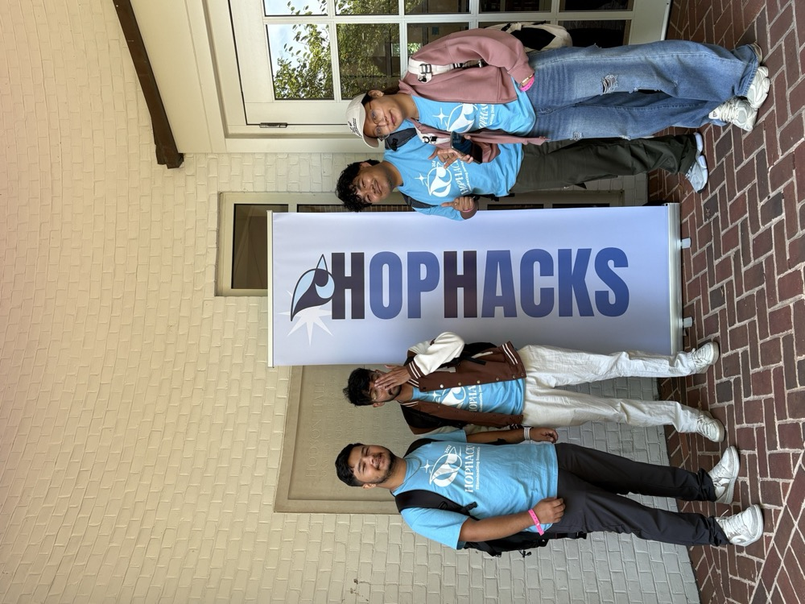

Ricky Gole Ricky Gole is a graduate machine learning researcher at Morgan State University specializing in natural language processing and retrieval-augmented generation systems. His work focuses on improving the reliability of large language models by addressing hallucination, semantic drift, and personalization failures in real-world applications. He has analyzed over 15.8 million user interactions to study the relationship between behavioral signals and semantic meaning, and has designed hybrid retrieval architectures that outperform zero-shot LLM baselines. His research integrates large-scale data analysis, semantic embedding models, and transformer-based architectures to develop LLM systems that are accurate, grounded in evidence, and empirically validated.
Ricky Gole is currently pursuing a Master’s degree in Advanced Computing at Morgan State University, where he conducts research in natural language processing and retrieval augmented generation systems with a focus on large language model reliability, alignment, and evaluation under real world data conditions; he previously earned a Bachelor’s degree in Computer Information Systems and Financial Economics from Caldwell University, where he developed a strong foundation in software engineering, data systems, and statistical modeling; his current work integrates transformer based architectures, semantic embeddings, and Direct Preference Optimization on Llama 3 to design retrieval and generation pipelines that reduce hallucination, enforce semantic grounding, and improve evidence based reasoning, and his research contributes to ongoing scholarly work in machine learning, educational data mining, and trustworthy AI systems.
Natural Language Processing and Semantic Representation: Developing transformer-based language models and semantic embedding systems to represent, retrieve, and reason over natural language data, with a focus on contextual understanding, multilingual signals, and scalable representation learning.
Retrieval Augmented Generation and LLM Reliability: Advancing retrieval augmented generation pipelines that enforce semantic grounding and reduce hallucination in large language models, using hybrid architectures that combine semantic embeddings with behavioral signals to improve faithfulness and evidence-based generation under real user queries.
LLM Alignment and Faithfulness: Developing and evaluating alignment strategies for foundation models including Direct Preference Optimization and constraint-based generation to improve factual consistency, reasoning reliability, and robustness in transformer-based language systems.
Evaluation and Failure Analysis of AI Systems: Designing statistically grounded evaluation frameworks and large-scale experiments to measure semantic drift, retrieval failure, and hidden model errors, with a focus on reproducible benchmarking, bootstrap testing, and real-world deployment conditions.
Trustworthy AI demands robust governance and unwavering regulatory compliance across the entire AI lifecycle—from conceptualization to design, development, and deployment. This comprehensive framework ensures that AI technologies remain transparent, accountable, and secure. It prioritizes explainability, robustness, and reliability, while steadfastly upholding privacy, safety, and security. Furthermore, it is grounded in a deep commitment to social and environmental responsibility, ensuring that AI serves the greater good of society.
AI algorithms have long been criticized for producing biased and opaque results. In response, our mission is to pioneer computational techniques that are not only groundbreaking but also responsible. By placing paramount importance on issues of Fairness, Accountability, Transparency, and Ethics (FATE), it is crucial to ensure that AI, Machine Learning (ML), and Natural Language Processing (NLP) address the complex societal challenges they create. This approach is designed to foster trust, mitigate harm, and shape AI systems that truly benefit all.
Data Science for Social Good is dedicated to answering the most pressing questions of human well-being through the power of machine learning, data science, and AI. This initiative focuses on projects that prioritize social impact, working hand-in-hand with governments and nonprofit organizations to tackle real-world challenges across critical sectors such as health, criminal justice, political science, and more. The goal is to leverage data-driven insights to drive meaningful, lasting change for society at large.
Much like Data Science for Social Good, AI+X embraces interdisciplinary collaboration across a wide spectrum of fields—both within STEM and beyond. This initiative seeks to push the boundaries of knowledge by conducting pioneering research at the intersection of AI and diverse disciplines, including Education, Biology, Psychology, Linguistics, Social Science, Healthcare, and beyond. By blending AI with other domains, AI+X aims to unlock innovative solutions to complex global challenges, enhancing the impact of AI across every facet of human endeavor.



1700 East Cold Spring Lane, Baltimore, MD 21251
Machine Intelligence and Data Science (MINDS) Lab